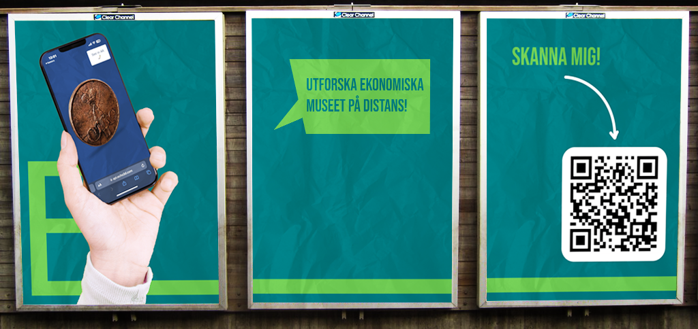

Ekonomiska museet - 2024
Timeline: 6 may 2024 - 31 may 2024
My role(s): Graphic Designer, UX/UI designer & Test Coordinator
The Economic Museum is a place to explore topics related to economics, finance, and society. The museum is located in Stockholm and houses over 650,000 objects, ranging from coins to stock certificates. Our task is to create a concept that helps the Economic Museum reach audiences across the country. This report outlines our process and explains how we arrived at the final concept. Our primary target group is high school students aged 16–18, as engaging with economics can be both educational and inspiring for them before entering adulthood.
Our aim is to provide young people with an inspiring and interactive experience that sparks their interest in economics and society. We also want to make this accessible to those who cannot visit the museum in Stockholm, thereby reaching our target audience nationwide.

